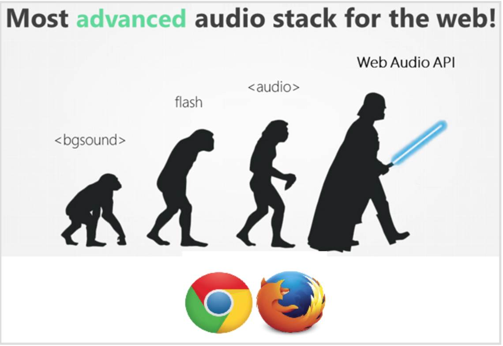

Con ética, sin Safari y con mucho estilo
If you would like to receive the following information in English, please let us know by writing to interpretame.contact@gmail.com.
¡Noticias fresquitas del universo Interprétame! Nuestra compañera Laura Heredia (@Laura_HA_97) se ha lanzado a la piscina en la Revista digital y nos ha acercado al ámbito de la Interpretación social y de los dilemas éticos de la profesión. https://goo.gl/7SGls6

El interesante extracto de la conferencia Ethical Stress and the Interpreter’s Agency que la estudiante malagueña nos ha regalado ya ha recibido más de 500 visitas y ha suscitado la reacción de algunos usuarios que se plantean cuál es la postura más acertada ante el llamado hate speech. Si no sabes a qué nos referimos, este artículo puede hacer que te plantees algunas preguntas nuevas; si ya tienes una opinión al respecto, nos encantará que la compartas en los comentarios inferiores.
Por otro lado, la nube de tags de Interprétame va creciendo y revelando los gustos de la comunidad. Echa un vistazo a la sección Explora y déjate seducir por los discursos que otros usuarios han estado interpretando estas últimas semanas. (https://www.interpretame.com/discover).

Como podéis ver,no solo de conferencias vive uno, sino que el cine es también una fuente estupenda de discursos en la que quizá no habíais pensado. V de Vendetta, El gran dictador o Caza a la espía son algunos de los films cuyos discursos más famosos
encontraréis haciendo clic sobre la tag “movie speeches”. Un ejercicio muy divertido que permite disfrutar a la vez de la interpretación y del séptimo arte.
En cuanto a novedades técnicas, a través de nuestra última notificación en el foro ( https://forums.interpretame.com/topic/12/funcionamos-en-chrome-y-firefox) podéis enteraros de porqué Chrome y Firefox son vuestros aliados en la creación de Prets. Para explicarlo en pocas palabras, la tecnología que Interprétame utiliza para permitir grabar y gestionar audios con facilidad y desde cualquier lado —Web Audio API— es un avance que otros navegadores, como por ejemplo Safari, todavía no soportan.
Asimismo, trasteando por la plataforma os daréis cuenta enseguida de que el estilo de la interfaz es mucho más atractivo e intuitivo en la nueva versión (v1.1.0) que subimos la semana pasada. Entre otras muchas mejoras, hemos eliminado los pop-ups y los hemos sustituido por mensajes explicativos totalmente integrados en la página y nada invasivos.
Otro de los añadidos más destacables lo encontraréis en la wiki, (https://www.interpretame.com/wiki/) desde donde, a partir de ahora, no solo podréis acceder a todas las newsletters y descargároslas en PDF, sino que podréis obtener las versiones en inglés haciendo clic sobre un nuevo botón situado a la derecha en la barra superior.
Para cerrar esta newsletter, compartimos una noticia que seguro que os hará ilusión: estamos preparando un webinar gratuito para que podamos navegar juntos la plataforma y tengáis oportunidad de plantear “cara a cara” las dudas que os vayan surgiendo. Os informaremos en breve de la fecha exacta en la que tendrá lugar, pero podemos adelantaros ya que será en abril. ☺ ¡Haced correr la voz si conocéis a personas interesadas!
Un saludo y, como siempre, estamos a vuestra disposición para lo que necesitéis.